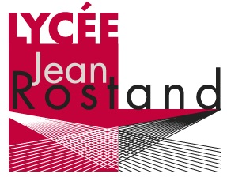

Portfolio · BTS SIO SLAM
Bonjour, et bienvenue
sur mon Portfolio|
Je m'appelle Hadrien Fernandes, étudiant en 2nde année de BTS SIO spécialité SLAM
Vous retrouverez ici l'ensemble de mes certifications, ainsi que les projets que j'ai réalisés au cours de mes deux années de BTS.

SIO
SLAM